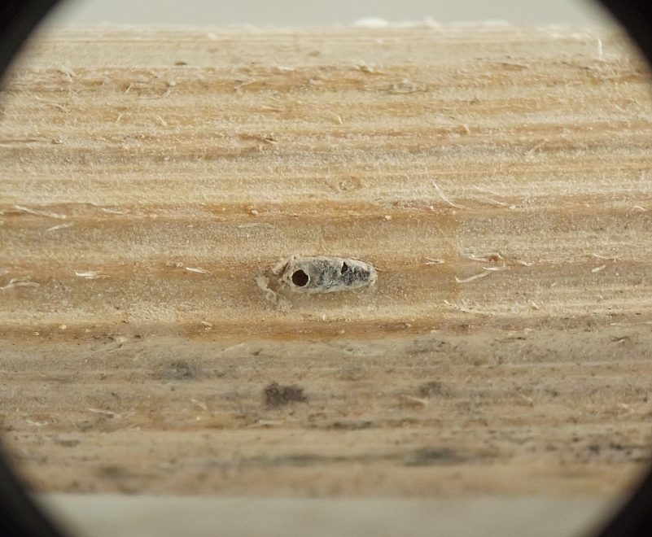
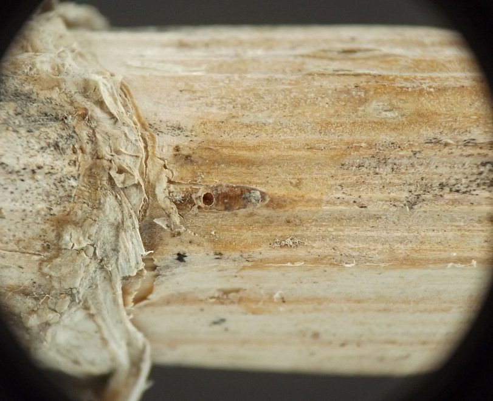
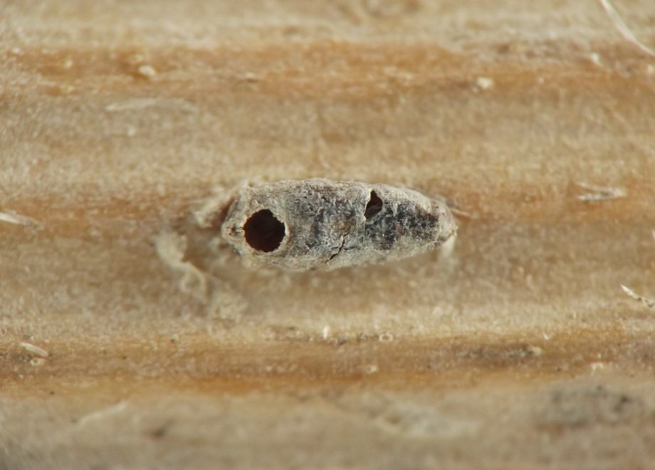
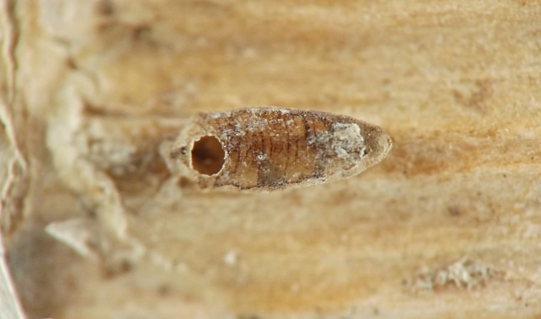
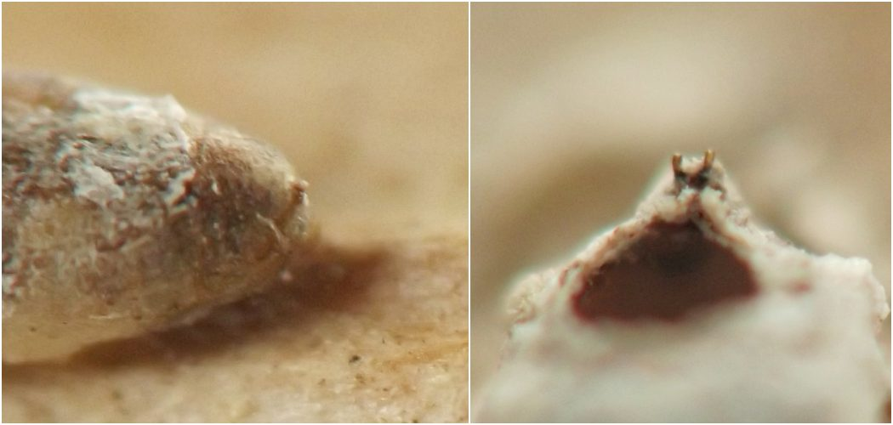
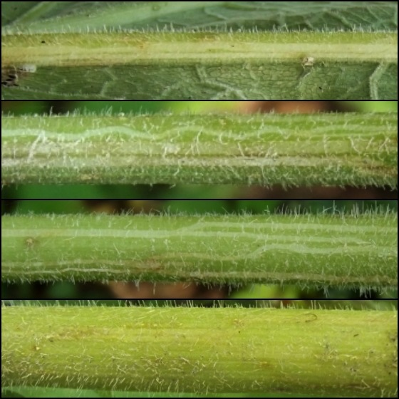
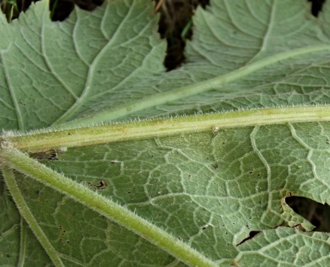

Stem miner (Diptera: Agromyzidae) in Heracleum
| Record no.: | 0274 |
|---|---|
| Feeding guild: | Stem miner |
| Taxonomy: | Diptera: Agromyzidae: Ophiomyia sp. |
| Stages observed: | trace, puparium |
| Distribution observed: | IA |
| Hosts in Heracleum: | H. maximum (cow parsnip) |
I have found several parasitized Ophiomyia puparia on dead stems of cow parsnip in the winter. In at least two instances I photographed, much or all of the stem epidermis surrounding the puparium had disintegrated, leaving the puparium mostly exposed but still adhering to the outer wall of the stem, and a single round parasitoid exit hole, its diameter about half the width of the puparium at its widest point, perforated the dorsal surface of the anterior end of the puparium.
I also encountered whitish agromyzid mines on midribs, petioles, and the main stem of a cow parsnip plant in early September, 2021. They wound up and down the length of the plant. My initial impression was that an Ophiomyia was responsible for these. However, I did not note any externally visible puparia on this plant, and there is a stem-feeding Phytomyza species on cow parsnip (record 0695) that pupates deeper in the plant tissue and whose mines I have not yet learned to distinguish from the Ophiomyia, so the identity of the September 2021 mines remains uncertain, and they are only tentatively included in this record.

 Prev
Prev
{kind=link}
{kind=link}

{kind=link}

{kind=link}

{kind=link}

{kind=link}

{kind=link}

Page created: March 27, 2026. Last update: none